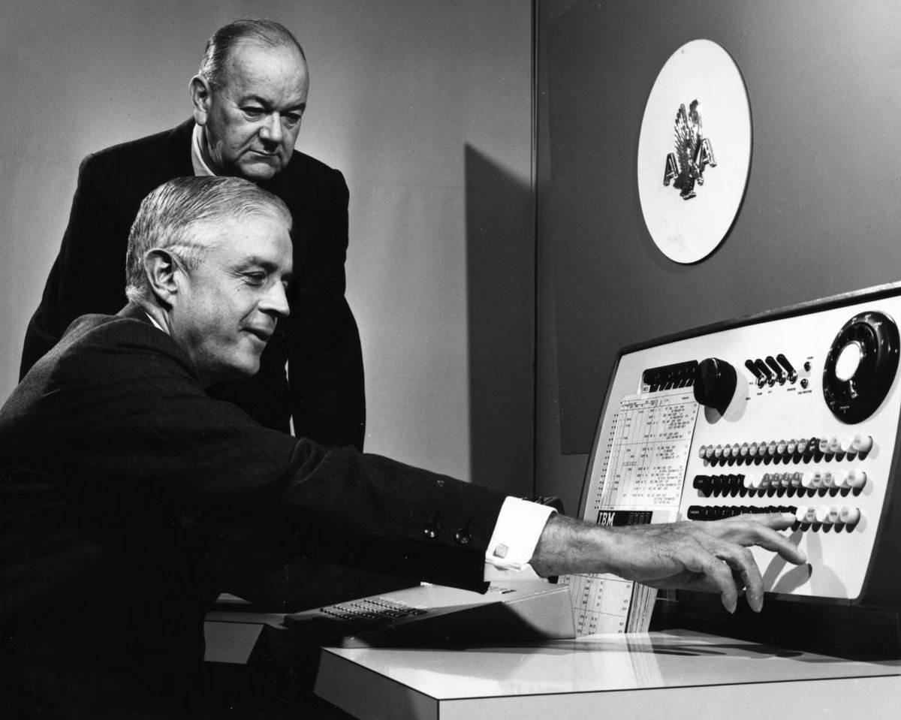

Chapter 3 · Technology and Competitive Advantage
Technology and Competitive Advantage: How Zara Made Speed Impossible to Copy
Zara's rivals have watched it for twenty years, can buy every piece of equipment it owns, and have said publicly that they intend to match it. None of them has. This chapter asks which parts of an information system a competitor can simply purchase, and which parts they would have to become a different company to match.
A fashion trend appears on a runway or a street corner. At most clothing companies, a garment responding to it reaches stores six to nine months later: an eternity, and a guess. At Zara, it can hang on a rack in roughly two weeks. Same industry, same fabrics, same sewing machines. The difference is an information system, and it made Zara's parent company one of the most valuable retailers on earth.
Sections 01 and 02 are the concepts. Section 03 puts them to work on three short cases, each with a question you can answer from the reading. Section 04 is the full case, Zara. Section 05 is what that advantage costs and who pays it, and the discussion questions at the end come from both.
Jump to the Zara case → Jump to what it costs → Jump to the discussion questions →
01What competitive advantage actually is
Chapter 2 asked when information is worth collecting and answered it with the value test: information has value when it changes a decision. This chapter asks the strategic version of the same question, because a system can change decisions every day and still leave you exactly level with your competitors, who bought the same system from the same vendor. So start with what an advantage actually is, and what makes one last.
An advantage is sustainable only when rivals cannot copy it at a price worth paying. Keep that test in hand for the whole chapter: at each step of the Zara case below, ask what a rival with unlimited money would still find hard.
Competitive advantage is the ability to create more value than rivals: by charging more for something customers prefer (differentiation), by delivering at lower cost (cost leadership), or by responding faster than the market can (speed, which is really both). The word that matters more than "advantage" is sustained. Anyone can win a quarter. The strategic question is what stops rivals from copying you by next year.
The standard test comes from the strategy researcher Jay Barney: an advantage endures only if the resource behind it is valuable, rare, and hard to imitate. Remember the name, because he turns up again in section 02 applying his own test to AI. Run any company you admire through it and the individual pieces usually fail immediately. The machines are for sale. The software is licensed. The building materials are the same ones everyone else uses. What occasionally passes the test is not a piece of equipment at all, but the way a company has arranged itself: a combination assembled over years, touching several departments at once, that a rival could only match by rebuilding itself. Keep that distinction in view, because it is the difference between a purchase and an advantage.
Technology you can buy cannot be an advantage, because your competitor's procurement department has the same catalog. Durable advantage lives in the system, the way data, software, networks, and people are woven together around a process rivals can't easily rewire themselves to run. You will test every remaining case in this course against that sentence.
Beyond running the business better, information systems change the competitive structure of an industry itself. Four mechanisms recur, and you should learn to name them on sight:
- Switching costs, a system that accumulates your history, preferences, or data makes leaving expensive. Every playlist you build deepens the trench around your streaming account.
- Network effects, a system that grows more valuable as more people use it. Each additional rider makes the ride-share map denser for everyone; latecomers face an emptier map.
- Barriers to entry, when serving customers requires a system that took a decade and billions to build, the price of admission excludes newcomers.
- Speed of learning, the least obvious of the four. If your loop from noticing something to acting on it runs in days and your rival's runs in months, you get a dozen attempts in the time they get one. The advantage compounds, because faster learning produces better information, which produces faster learning. The case at the end of this chapter is built entirely on this one.
Porter's Five Forces
The standard map of an industry’s competitive pressure, and the framework you will be asked to apply in interviews and exams alike, is Michael Porter’s five forces. Profit drains toward whichever forces are strong. Strategy is the work of weakening them in your favor, and information systems are one of the few tools that can move all five at once.
| Force | The question it asks | Strong when |
|---|---|---|
| Rivalry | How hard are existing competitors fighting each other? | Competitors are many, similar, and stuck competing on price |
| New entrants | How easily can somebody new start competing with you? | Starting up is cheap and fast, so anyone can try |
| Substitutes | What else could a customer do instead of buying from this industry at all? | An easy alternative exists, including doing nothing |
| Buyer power | How much leverage do customers have over price and terms? | Buyers are few, large, or can walk away at no cost |
| Supplier power | How much leverage do your suppliers have over you? | Few suppliers, or switching to another is expensive |
Two things to keep straight. A strong force is bad for the companies in that industry, because it pulls profit away from them. And the forces describe an industry, not a company: every airline faces the same five, and what separates them is what each has done to weaken the ones it can reach.
Run one industry through all five to see how it works. Take airlines. Rivalry is brutal, because a seat on one carrier is close to a seat on another and the comparison sites make price the only visible difference. New entrants are held off reasonably well, since aircraft, gates, and route rights cost a fortune. Substitutes are real on short routes, where driving, the train, or a video call all replace the flight. Buyer power is high for leisure travelers, who will switch for twenty dollars, and low for a business traveler who has to be in Denver Tuesday morning. Supplier power is enormous: two companies build almost all large passenger aircraft, jet fuel is priced by a market nobody controls, and unionized crews negotiate as a block.
Now read the verdict. Four of the five forces are working against airlines, which is why the industry has famously struggled to make money across its history despite carrying more passengers every decade. That is the point of the framework. It explains why some industries are profitable and others are punishing, before any individual company’s strategy enters the picture.
Five situations, each one an example of a single force getting stronger or weaker. Name the force before you check.
The same fact can look like different forces depending on whose side of the table you are sitting on. Read each one from the point of view of the company being squeezed.
02Why most technology advantages evaporate
Section 01 said an advantage lasts only while the thing behind it stays valuable, rare, and hard to imitate. Technology has a habit of failing that test, and usually on the same leg: whatever you bought, your competitor can buy. This section is about why that happens so reliably, and what the exceptions look like.
Start with the most common answer companies give, which is that they will simply get there first.
The edge from doing something before rivals do: learning curves, brand association, and customers locked in by switching costs before anyone else can reach them.
It is real, and it is routinely oversold, because being first also means paying to educate the market and making the mistakes later entrants get to skip. Friendster launched before Facebook, MySpace was bigger than Facebook, and neither one is around. Google was not the first search engine, and Apple did not make the first smartphone. Being first matters far less than being first to build something others find expensive to copy.
When a capability becomes purchasable by anyone, it stops differentiating anyone. This is commoditization, and it is the engine of Carr’s 2003 argument that technology no longer provides a strategic edge. The test is simple: could a competitor have this by next quarter if they signed a contract? Servers, tracking tags, and analytics software all pass that test, which is why none of them is an advantage. Commitments that took a decade to build and would take a decade to unwind do not, which is why some companies stay ahead for twenty years while owning nothing their rivals cannot also buy.
In 2003, Nicholas Carr scandalized the industry with an essay titled "IT Doesn't Matter", arguing that as technology becomes cheap and ubiquitous it becomes like electricity: essential, and strategically irrelevant, because everyone has it. History gives him plenty of support, and section 03 walks through three examples.
Carr was right about one thing and wrong about another. He was right that technology you can simply buy stops being an advantage almost immediately, and becomes something you need just to stay in business. That is a real category and worth keeping separate in your head: a capability where having it wins you nothing and not having it loses you customers. Online ordering was an edge for Domino’s in 2008. Today a restaurant without it simply loses orders, and nobody chooses a restaurant because it has a website.
What he got wrong is where the line falls. The parts become cheap and available to everyone. The arrangement does not: the data you have collected over years, the way your particular company runs, the people trained to act on what it tells them. Nobody sells twenty years of your own customer history, or the habits an organization builds around using it.
Carr's argument, tested on AI
Apply that boundary to the technology everyone is currently buying. Your company can rent the same AI models as your competitor, from the same handful of providers, at published prices. You can rent the same cloud computing to run them on. If your rival wants what you have, the purchase order takes an afternoon. By Carr’s test, that is not an advantage. That is the cost of staying in business, arriving in real time, and companies announcing an AI strategy are frequently announcing that they have bought what everyone can buy.
So what is left? The same things that were left in 1985 and in 2003. The data the model learns from, which is yours and accumulated over years. The processes you point it at, which reflect how your company actually works. And the people who know which question is worth asking, whether the answer is any good, and what to do about it. A rival can buy your model. They cannot buy your decade of customer history, the judgment of somebody who has run your operation for fifteen years, or the idea nobody else had.
That is not a fringe view, and it has picked up a notable endorsement. In 2025, David Wingate, Barclay Burns, and Jay Barney argued in MIT Sloan Management Review that AI changes nothing fundamental about sustained advantage once its use is everywhere. The third name is the one to notice: Barney wrote the test in section 01, and running his own test on AI he scores it valuable, not rare, and not hard to imitate. Their conclusion is worth keeping. AI will be a source of homogenization rather than differentiation, lifting whole markets while uniquely advantaging nobody. They expect real but temporary advantages for early movers, and they put lasting differentiation in human creativity: the people who find a use, a partnership, or a way of reaching customers that nobody else thought of.
They also leave you a distinction to make. Their argument is that training data is being commoditized along with everything else, while this chapter says accumulated data is the durable part. Both hold, and the difference is the one to carry: the general data a model is trained on is a purchase, and the record your own operation produces is not. Chapter 2 showed that from the other direction. Starbucks could build a useful AI platform in 2019 because it had been collecting identified purchases since 2011. The model was available to everyone. The ten years of data were not.
So which components actually matter?
Chapter 1 said every information system is built from the same five components. This chapter adds a second question to ask about each one: can a competitor buy it? Run the five through that test and they sort into two groups very cleanly.
| Component | Can a rival get this? | So what is it worth? |
|---|---|---|
| Hardware | Yes, from the same manufacturers, at the same prices | Necessary, never an advantage. Everyone in your industry has roughly the same machines. |
| Software | Yes, licensed by the seat, often from the same vendor you use | Necessary. If you can buy it, so can they, and usually by next quarter. |
| Networks | Yes, rented from the same providers | Necessary. Connectivity stopped being a differentiator decades ago. |
| Data | Some of it. Plenty of data is for sale, and anything you can buy your competitor can buy too. | Purchased data is a commodity like any other purchase. The data your own operation generates, about your customers and your work, is the part nobody can sell them. |
| People | No. They can hire similar people; they cannot hire your organization. | The judgment about what to build, what it means, and what to do about it. The part that decides whether the other four were worth anything. |
Hardware, software, and networks are things you buy, and none of them will ever separate you from a competitor. People are the clearest case on the other side. Data sits across the line, which is what makes it the interesting one: the part you purchase behaves like hardware, available to anyone with a budget, while the part your own operation produces behaves like people, built up over years and impossible to acquire any other way.
None of this is an argument for spending less on the things you buy. A hospital needs a network that does not fail, or surgeries get postponed and records become unreachable. A retailer needs registers that work on Black Friday. A failure in any one of them stops everything, which is the weakest component rule from Chapter 1.
But separate two questions organizations confuse constantly. What do we need to function? and what will put us ahead? have different answers. Hardware, software, and networks answer the first: they are the cost of operating, the same way electricity is, and nobody expects an advantage from having lights. Notice what the hospital gets for a network that works. It gets to open its doors. It does not get patients choosing it over the hospital across town, because that hospital's network works too. What you accumulate over time, and what your people do with it, is the only part that answers the second question.
The data row is where the two groups meet. Somebody has to decide what is worth recording in the first place, and that decision is made by people, usually years before anyone knows what it will be good for. Starbucks attached a name to every purchase in 2009, long before a return calculation could have justified it. A retailer that records what customers asked for and could not find has invented a data source no register captures and no vendor sells. Nobody required either one, and both turned out to be the asset.
There is also a sixth thing that is not on the list, and it belongs in the same group as data and people: your processes, meaning the specific way work moves through your company. A rival can buy identical software and still get a worse result from it, because the software is running inside a different organization. Chapter 4 is about exactly that, and it opens with a company that had excellent technology sitting on top of a process nobody had fixed.
When executives say "we're investing in technology to gain an advantage," ask which side of Carr's boundary the investment lands on. Buying what everyone can buy is defense: necessary, and worth zero edge. In Week 7 you will watch Nike spend $400 million on buyable software and lose $100 million, precisely because the un-buyable parts (clean data, fitted process, trained people) were treated as afterthoughts.
03Three short cases, one old question
Before the cases, something worth knowing about the question this chapter asks. It is not new, and it is not close to new. Every generation of managers has met a technology that was going to change everything, and every generation has produced researchers arguing about whether it actually gave anybody an advantage.
- 1958. Two professors, Harold Leavitt and Thomas Whisler, write in Harvard Business Review about a new thing they have to name, because it does not have a name yet. They call it information technology, and predict it will hollow out middle management.
- 1985. Michael Porter and Victor Millar argue in the same journal that information technology is changing the nature of competition and that firms must use it to gain advantage. This is the optimistic case, and it is the one most textbooks still teach.
- 1987. The economist Robert Solow observes that computers are visible everywhere except in the productivity statistics. The gap between what companies spent and what showed up in output gets a name: the productivity paradox.
- 1991. Jay Barney publishes the valuable, rare, hard-to-imitate test from section 01, which is a way of asking the question precisely instead of arguing about it.
- 2003. Nicholas Carr says it flatly: IT doesn't matter.
- 2025. Barney and two coauthors run his own test on AI and reach the verdict you read in section 02.
Sixty-seven years, one question, and no year in which anybody settled it. Sit with that, because you are going to spend a career hearing that this time the technology is different. The three cases below are what the argument looks like when you check it against companies rather than against other arguments. Each one lost a different leg of Barney's test, and which leg it lost decided how the story ended.
Mini-case 1 · 1976: the machine that booked the flight
Before SABRE, booking a flight meant an agent writing your details on a card and filing it in a rotating rack. A reservation took about ninety minutes to process, and the same seat regularly got sold twice. American Airlines and IBM spent roughly forty million dollars building a system to fix it, using technology developed for Cold War air defense, and by the mid-1960s it was handling 7,500 reservations an hour with each one taking seconds instead of an hour and a half.

An IBM demonstration of the Sabre system to American Airlines. Photograph via IBM Heritage.
Then American did something cleverer than building it. In 1976 they put terminals in travel agencies. An agent looking for a flight saw American’s options first, because American wrote the software that decided the order. In an era when most bookings ran through agents, controlling the screen meant controlling the sale.
It worked so well that it stopped being a business advantage and became a regulatory problem. Regulators eventually forced changes to how the system displayed rivals’ flights, and the airline industry moved to shared booking platforms that no single carrier controlled. The advantage lasted roughly a decade and then was legislated away, which is a failure mode worth knowing: an advantage can be destroyed by rules rather than by competitors.
What it lost: rare. SABRE stayed valuable and stayed hard to build. What ended it was that regulators required the screen to show rivals fairly, and the industry moved to shared platforms, so American no longer had something nobody else had. Note who took the rarity away. Not a competitor with a better system, but a rule.
Mini-case 2 · 1969: the first bank with a cash machine
The first banks to install automated teller machines won customers, and for a while an ATM was a reason to switch banks. Then every bank had them. Then banks joined shared networks so a customer could use any machine, which erased the last of the difference. Today a bank without ATM access is unthinkable and a bank with them is unremarkable.
Nothing went wrong here. The technology worked exactly as intended for fifty years. It simply stopped distinguishing anyone, which is the ordinary fate of a capability that can be bought. That is commoditization, and the ATM is its cleanest example: a genuine advantage that decayed into a cost of doing business.
The ATM also raised the question of what the machine did to the people whose job it replaced. That turns out to be a longer and more surprising story than anyone expects, and Chapter 9 takes it up properly.
What it lost: rare, and then hard to imitate. The machines stayed valuable, and they still are. But anyone could buy one from the same manufacturers, so rarity went first, and then shared networks meant even the placement of your machines stopped mattering. This is the ordinary path for anything purchasable, and it is the one to expect for most technology you will ever be asked to approve.
Mini-case 3 · 2004: the late fee that funded a company
Blockbuster had 9,000 stores and a business that depended on a network of retail leases no competitor could assemble quickly. That was a real barrier to entry, and it protected the company for years. Then the barrier became the burden. Netflix, mailing discs and later streaming, did not need the stores at all, and Blockbuster’s expensive advantage turned into an expensive obligation it could not exit. It filed for bankruptcy in 2010.
This is the third way an advantage ends, and the most dangerous one. SABRE was regulated away. ATMs were copied. Blockbuster’s advantage was still hard to copy on the day it stopped mattering, because the game changed underneath it. Being hard to imitate is not the same as being worth imitating.
What it lost: valuable. The store network stayed rare, and it stayed extremely hard to imitate right up to the end. Nobody was going to assemble nine thousand leases quickly. It simply stopped being worth having, which is the failure that catches companies by surprise, because every internal measure still says the asset is strong.
What survives, and why
Put the three side by side and a pattern shows up. Each of these advantages lived in something you could point at: a reservation system, a machine in a wall, a network of leases. Point at a thing and somebody can eventually buy it, regulate it, or route around it.
The advantages that last tend not to be things. They are arrangements, and that is what all three legs of the test holding at once actually describes.
That is also why the question in the timeline keeps coming back. The technology changes every decade and the test does not, so each new arrival gets asked the same three things and mostly gives the same three answers. Learn the test and you can settle the argument for yourself the next time somebody tells you this one is different. The next section is a company whose competitors have been able to see exactly what it does for twenty years, have said publicly that they intend to copy it, and have not managed it.
04Zara: the two-week dress
Section 03 ended on three advantages that each lost one of the three legs. This is the case where all three have held for two decades, in an industry with no patents, no secret formula, and nothing preventing a rival from buying the identical equipment tomorrow. Read it with section 01's test in hand, and keep asking the question the key concept box posed: what would a rival with unlimited money still find hard?
Three numbers set the scale of what the loop achieves:
The loop
Here is the loop, and notice how ordinary each piece of it is.
- The store reports, every evening. What sold, what stalled, and critically, what customers asked for and didn't find.
- The signal reaches Arteixo. Point-of-sale data flows to headquarters in Spain alongside those human observations.
- Designers turn it into product within days. They sit next to production planners, which is a seating chart doing strategic work.
- Factories make a little. Many of them nearby rather than across an ocean, and producing in deliberately small batches.
- Twice-weekly deliveries put it on the rack. Scarcity is a feature here: if you don't buy it now, it may never come back.
Then the loop runs again. Thousands of new designs a year, each one a small, fast, cheap bet informed by last week's evidence.
Compare the traditional model it beat: forecast a season's demand many months out, commit to huge orders from distant factories, then discount whatever the forecast got wrong. The traditional model bets big on a guess. Zara's system bets small on data, thousands of times, and lets the customers vote. That is the mechanism section 01 called speed of learning, and the rest of this case is an account of what it costs to run one.
Zara doesn't predict fashion better than its rivals. It built a system that makes prediction less necessary.
"Zara is fast" is a slogan. Here is how it actually works, because the specifics are what make the advantage hard to copy.
Every garment is a tracked object
Zara completed a rollout of RFID across its stores in 2016, with the chip embedded in the garment's security tag. A radio-frequency tag lets a handheld reader identify every item in a room in seconds, without anyone reading a label. The practical effect is that headquarters knows, close to live, what is on which shelf in which store on which continent, and a staff member can find out in a minute that a size is sold out on the floor but sitting in the back room. Inventory counts that used to take a full night now take a fraction of it.
Which means the famous nightly report is not a manager guessing. It is human observation added on top of a precise machine record: judgment where judgment is needed, counting where counting is needed.
One warehouse, twice a week, everywhere on earth
Inditex runs a centralized logistics operation in Arteixo, in Galicia, with the Zara hub covering millions of square feet and running close to around the clock, nearly every day of the year. Merchandise is routed through Spain regardless of where it is going. Shipments reach stores about twice a week. The company's stated target: any store in the world can have new inventory within roughly two days of ordering it. Much of the fast-turning production sits close by rather than an ocean away, and that closeness is what makes a two-week cycle arithmetically possible in the first place.
This is the expensive, slow part of the advantage, and it is why the strategy resists copying. Inditex committed on the order of two billion euros to logistics expansion for 2024 and 2025 alone, building new distribution centers and adding capacity. A competitor who wants Zara's speed does not need to buy software. They need to rebuild their supply chain, their factory relationships, and their warehouse footprint, then wait years.
No two stores get the same shipment
Small batches create a problem the speed story tends to skip past. If you deliberately make only a few hundred of something, you cannot send it everywhere. Every week the warehouse holds less of each item than the store network could sell, so somebody has to decide which stores get it and which do not. That decision, repeated across thousands of items and thousands of stores twice a week, is where the data stops being interesting and starts being worth money.
Zara's process runs in two directions at once. Headquarters sends each store a weekly statement of the items that store is allowed to request, which is how central assortment decisions reach the floor: if an item is not on your list, you are not getting it. The store manager then requests specific items and quantities from that list, which is how local knowledge travels back up. Assortment is decided twice, once centrally in what gets offered and once locally in what gets asked for, and neither decision is made by someone guessing at a market from a distance.
That is the mechanism behind the thing shoppers notice. A Zara in one city carries a visibly different mix from a Zara in another, and not because a team somewhere sat down and designed a Pacific Northwest range and a Japanese range. It is because two managers asked for different things out of the same warehouse, and something had to decide who got the limited stock.
What makes the decision hard is a store policy rather than a technical limit. When an article runs out of one of its key sizes, Zara pulls the whole article off display, on the reasoning that a rack a customer cannot buy their size from is worse than no rack at all. So allocation is not a question of how many dresses to send. It is a question of which sizes to send to which store, and getting the size mix wrong takes the entire style off that store's floor.
For years the final call was made by warehouse teams working from the requests in front of them and their own experience. Zara then worked with two operations researchers, Felipe Caro and Jerémie Gallien, to build a model that computes shipment quantities for every store from demand forecasts and current inventory. A controlled pilot put the improvement at three to four percent in sales, which the researchers estimated at roughly 275 million dollars for 2007, along with fewer transfers between stores and more of each product's short life spent actually on display.
Sit with that number, because it is Chapter 2's value test with a figure attached. The garments did not change. The stores did not change. The warehouse did not change. The only thing that changed was the decision about where the limited stock went, and better information changed it. Notice also which components did the work. Not the hardware, and not software anyone could license, but the data Zara alone had and the people at both ends, the manager who knows the floor and the analyst who can allocate across three thousand of them at once.
And it shows up in the number the whole system exists to move. A typical fashion retailer finishes a season with something in the mid-teens as a percentage of merchandise unsold, headed for markdown or disposal. Operational analyses of Inditex put it in the low single digits. Treat any single figure carefully, since the company does not publish it as a headline disclosure, but the direction is not in dispute: commit a fraction of a season in advance, make the rest against what actually sold last week, and you produce far less of what nobody wanted.
Why nobody can buy the data
Section 02 said the line between what a rival can buy and what it cannot runs through the middle of the data component. Zara is where that gets concrete.
Start with what is not the advantage. Trend forecasting is a service, sold to every retailer in the industry. Point-of-sale data is not special; everyone has a record of what they sold. Demographic data sells by the terabyte. If you can buy it, so can they.
Now the part that does. Every night, Zara stores record what customers asked for and could not find. That is a record of sales which did not happen, and no register captures it, because a register only knows about transactions. The customer who wanted the jacket in green, or in a size that was gone, leaves no trace in a normal retail system. She walks out and the day still looks fine. Zara has that trace only because somebody decided, years ago, that a person on the floor should write it down.
That is the shape of a real data advantage, and it has three properties worth naming.
- It had to be invented, not collected. No vendor sells the asked-for-and-not-found signal, because it is not a standard field in anything anyone ships. It exists because Zara defined it. Chapter 2 made the same point about Starbucks attaching a name to every purchase in 2009, years before anyone could have justified it. Both were decisions made by people, which is why the data and people components are so hard to pull apart.
- It cannot be bought retroactively. A competitor with unlimited money can buy Zara's hardware this afternoon, hire its analysts away by the end of the quarter, and match its software within a year. What it cannot buy at any price is twenty years of what customers walked in and asked for. Money buys things that exist, and a history is not one of them. A rival starting today begins at zero, and in twenty years is still twenty years behind.
- It compounds. Each turn of the loop produces the next turn's data, so better data makes better bets and better bets make cleaner evidence. Section 01 called this speed of learning; data is the substance it learns from. An advantage built on a purchase is fixed the day you buy it. This one widens on its own for as long as the loop keeps turning.
The usual name for a self-reinforcing loop like this one is a flywheel, a term Jim Collins popularized in Good to Great and one you will hear constantly once you are working. A flywheel is heavy and slow to start turning, and once it is turning each push is easier than the last, because what comes out of every turn is what goes into the next one.
Keep one distinction straight, because the two get run together constantly. A network effect makes a product better for you when other customers join. A flywheel makes the company better at its own job every time it runs its own loop, with nobody outside required to do anything. Zara has no network effect worth mentioning and a very good flywheel. Saying one when you mean the other will get you corrected in an interview.
Here is the test to carry into any company. Not whether an organization has a lot of data, since everyone does, but whether it has data nobody else has, whether it built the conditions that produce it, and whether anyone can act on it before it goes stale. Zara answers yes three times. Your lab client is a good place to practice: a member-owned co-op knows who its members are and what they buy across every visit and every store, which is exactly what an online giant with far more traffic cannot buy.
So does Zara use AI?
Yes, and the useful question is what it buys them. Here is what Inditex has actually said:
- Its 2026 results and shareholders' meeting describe AI as built into the group's operations generally, supporting staff and improving the shopping experience, rather than as any single project.
- There is a customer-facing feature: a virtual try-on that renders a garment on a shopper from a couple of photographs.
- Planned ordinary capital spending for 2026 is around 2.3 billion euros, aimed largely at store technology and the online platforms.
Now run that through the caution box in section 02, which told you to ask which side of Carr's boundary an investment falls on. Read honestly, most of the announcement lands on the buyable side. Every rival can rent the same models from the same providers. Every rival can build a virtual try-on. A competitor who read that release and decided to match it would need a quarter, not a decade.
Notice the language too. A claim that AI is embedded across the organisation, driving productivity carries no number, and belongs next to the accuracy figure Starbucks accepted from its vendor in Chapter 2. It may be true. It is not evidence, and a company holding a measurable result usually gives you the measurable result. Set it against the one hard number in this chapter: the allocation improvement, three to four percent, from an optimization model built in the 2000s before anyone would have marketed it as AI. The technique was not the point. It worked because Zara had per-store, per-size history nobody else had.
That is the idea to carry into Chapter 9, where AI gets a chapter of its own. Models are converging on being available to everybody, fast. What does not converge is what you feed them. Zara pointing a modern model at twenty years of asked-for-and-could-not-find signals gets an answer that a rival pointing the identical model at its own transaction log cannot get, because the rival's log never recorded the question. Same model, different data, different answer. That gap is the entire advantage, and it is why this chapter spent so long on where data comes from.
Run the test on it
Section 01 gave you a three-leg test and four mechanisms. The case has finally given you enough to run both, and the second one produces a surprise.
- Valuable. The loop attacks the largest loss in fashion retail, merchandise nobody buys. This is also the leg Blockbuster lost, and Zara is exposed the same way: if clothing shifted decisively toward resale, rental, or repair, a two-week design cycle would stay rare and stay hard to copy while mattering a great deal less.
- Rare. No competitor runs this loop at this speed at this scale, and not one individual piece of it is rare. Combinations are rare far more often than components are.
- Hard to imitate. A rival cannot buy the answer, because the answer is a supply chain, a warehouse footprint, factory relationships, and a habit of trusting store managers. None of those pays off alone, so a rival has to commit to all of them before any of them returns anything. Copying Zara is expensive the way becoming a different company is expensive.
Now the mechanisms, and notice how few Zara has. Switching costs: almost none, since a customer who leaves loses nothing. Network effects: none, since the dress does not get better because more people bought it. Barriers to entry: anyone can start a clothing brand and thousands do, so the barrier is not to entering the industry but to running it at Zara's speed. Which leaves speed of learning carrying the entire load by itself.
That is the finding worth keeping: one mechanism is enough when it compounds. The instinct is to reach for switching costs and network effects first, because those belong to the famous technology companies. Zara has neither and has stayed ahead for twenty years anyway. It was not a first mover either. Radio tags and point-of-sale data both long predate it, which is what the useful version of first-mover advantage looks like. Not first to the technology, first to arrange it into something expensive to copy.
Five forces, all leaning one way
Run the case through Porter's five forces, one at a time.
- Rivalry. The two-week loop turns a commodity fight over price into a fight over speed, which is a fight rivals structurally lose.
- New entrants. Replicating the factory, logistics, and data web is a decade-scale barrier, whatever a newcomer's budget looks like.
- Substitutes. Fashion's substitute is keeping last year's clothes. Freshness every two weeks attacks exactly that.
- Buyer power. Scarcity flips it. The customer who waits loses the dress, so for once the leverage sits on the other side of the counter.
- Supplier power. Owning and co-locating much of production keeps it low, because the supplier is frequently Zara.
One system, five forces, all leaning Zara's way. That is the difference between strategic technology and merely useful technology.
Two cautions before you reuse that, both of them from section 01. First, the forces describe an industry, not a company, so Zara has not made fast fashion a comfortable business to be in. Its rivals face the same five it does. What Zara changed is its own exposure to them, which is the only part a single company controls. Second, compare the airline walk-through in section 01, where four of the five ran against the industry and no carrier had any way to weaken them. Same framework, opposite verdict, and the thing standing between the two is a system.
The five components at Zara
Run the framework from Chapter 1 over everything above. Notice how ordinary each component is on its own, and what stops if any one of them goes:
| Component | At Zara | What breaks if it fails |
|---|---|---|
| Hardware | Registers, handheld RFID readers, factory machines, deliberately ordinary and buyable | A dead reader or a register down in a busy store: the count stops and the loop runs a day behind on that store |
| Software | Point of sale, design, and logistics systems, capable but nothing a competitor could not license | The signal still arrives and nobody can route it fast enough to act on it |
| Data | Daily sold, stalled, and asked-for signals from thousands of stores, compounding for decades | Designers go back to guessing a season ahead, like everyone else in the industry |
| Networks | Every store reporting to Arteixo nightly, over a logistics web tuned to a twice-weekly delivery rhythm | Two weeks becomes two months, and the strategy is just a slower version of the traditional one |
| People | Store managers trusted as sensors and given reorder authority; designers seated beside production planners | The tags keep counting, and nobody records what the customer asked for and could not find |
The weakest component rule from Chapter 1 applies here from an unusual direction. Zara has no weak component, and that is the point: the advantage is not any one of the five but the weave, so copying a single component buys a rival almost nothing. H&M can order the same tags tomorrow. Tags without the twice-weekly logistics rhythm, the nearby factories, and the store managers trusted to reorder produce a very precise count of clothes nobody wanted.
Then notice the thing that is not on the list at all. Section 02 called processes the sixth component, meaning the specific way work moves through a company, and nearly all of Zara's advantage lives there: the nightly report, the commitment to small batches, the twice-weekly rhythm, the store manager who is permitted to reorder without asking. Not one of those is a purchase. Every one of them is a decision about how work moves, which is why Chapter 4 takes processes on directly and opens with a company whose technology was excellent and whose process was not.
05The cost of the advantage
Section 04 is a story about an information system working. It would be dishonest to stop there, because the same capability that makes Zara efficient is the capability that makes fast fashion an environmental problem, and the connection is not incidental. It is the same machinery, described twice.
Consider what the two-week cycle actually does. A traditional retailer committed to a season months ahead, produced a large batch, and lived with the consequences. Zara commits to almost nothing, reads demand continuously, and produces in small batches on short notice. That is why it wastes less inventory than its competitors, and it is also why it can put far more distinct items into the world per year. The New York Times coined the term "fast fashion" to describe exactly this: Zara's ability to move a garment from design to store in about fifteen days.
Multiply that across an industry that copied the model.
The speed that removes waste from the supply chain moves it downstream, to the consumer and then to the ground.
The pattern shows up in Inditex's own reporting. In 2024 the company's emissions rose about ten percent while its raw material volume rose about five, and the energy required to move materials to collection centers rose fifteen percent. Efficiency per garment can improve while total impact grows, because the system is built to move as much product as possible, and it succeeds.
Reporting by the Thomson Reuters Foundation and Bloomberg traced how the speed actually gets delivered, and the mechanism matters more than any single statistic. When an order runs late, the clothes fly instead of sail. Air freight can produce as much as thirty-five times the carbon emissions of sea shipping, and in 2024 Inditex moved about a quarter of its Bangladesh production by air, up more than a quarter on the year before by value. Air shipping from Bangladesh to Spain alone was estimated at roughly 160,000 tonnes of CO2 equivalent for the year on a conservative calculation, and potentially more than twice that once the non-CO2 effects of aviation are counted.
Then follow the cost. Flying is expensive, and when a factory misses a deadline the reporting found that the cost is sometimes passed to the factory rather than absorbed by the brand. A factory carrying that cost squeezes the only variable it controls, which is labor. Garment workers interviewed described unpaid overtime, shifts running far past their paid hours, and take-home pay that has risen less than one percent in four years against nine percent inflation. Inditex told reporters it works with suppliers on solutions in the infrequent case of delays, and declined to answer several specific questions.
The environmental story has a human counterpart. Fast fashion's cost structure depends on manufacturing in countries with lower wages and weaker enforcement, and audits repeatedly find gaps between stated policy and factory reality. Zara makes more of its fashion-sensitive product close to headquarters than most competitors do, which is part of why it is fast. But its full supply chain still reaches into the same regions as everyone else's, and it has faced documented labor concerns along with the rest of the industry. Inditex has announced sustainability targets, including sustainable or recycled cotton, linen, and polyester, and has been criticized for the gap between announcement and verified outcome.
An information system is not morally neutral, and it does not become so by working well. The RFID tags, the twice-weekly delivery rhythm, and the store-manager reorder authority are the reason Zara wastes less inventory and the reason the industry can produce more clothing than the planet can absorb. The same system, read two ways. When you evaluate a system in this course, "does it work?" is only the first question. The second is what it makes easier, and for whom, and at whose expense. You will meet this again in Week 4 with charts that are accurate and misleading, and again in Week 10 when a model learns from a biased past.
Advantage for what?
This chapter has spent several thousand words treating competitive advantage as the point, so say the obvious thing plainly: it is a means, not an end. A hospital is not competing with the hospital across town for the patient having a heart attack. A city bus system, a public university, a food bank, and a state benefits agency all run substantial systems, and the question they face is not whether they are pulling ahead. It is whether the system serves the people it exists for, and whether it reaches the ones who need it most rather than the ones easiest to serve. Chapter 5 is that exact case.
Ownership changes the question too. Your lab client this quarter, Cascadia Outfitters, is a member-owned co-op, which means the customers are the owners. A co-op can decide that a slightly smaller margin and a store that stays open in a small town is the better outcome, and no shareholder can overrule it. That is not a company failing to maximize. It is a company answering to somebody different.
Growth is also a choice rather than a law. Firms occasionally cap it deliberately, by staying private, refusing a market, or declining to sell something they could sell. Everything in this chapter assumed you were trying to win, and a company could read the same two accounts and decide the business side has already won enough. That is a strategic position, not a failure of nerve, and one you almost never see modeled in a textbook. None of this makes the framework wrong; you will still be asked about Porter in an interview. It means the framework answers one question and not the largest one. For the rest of this course, ask what a system is for, and who decided that.
Every system in this course was assembled by people who could sit between the business and the technology and translate: business analysts, data analysts, consultants, product and project managers. That seam is chronically understaffed, which is why firms like Accenture, Deloitte, and Slalom hire MIS graduates in volume. What their interviews actually test is what this course practices: structure a messy business situation (the discussion questions), handle data without fear (the labs), explain a finding to someone senior in three sentences (every submission note), and use AI to multiply your work without outsourcing your judgment (Lab 1's policy). The course is the portfolio; the certificates are its receipts.
So does Zara have an advantage?
Yes. Say it plainly, because a chapter that ends on "it's complicated" has given you nothing you can use. Zara has a real competitive advantage, it is a technological one, and that is not a contradiction of section 02 even though it looks like one at first.
Here is the reconciliation, and it is the sentence to leave with. Technology you can buy never produces an advantage. Technology arranged into a system a rival would have to become a different company to copy can, and here does. Carr and Barney are right about the parts, and they are misread when people take them to mean technology cannot matter. Every component of Zara's system is for sale. The arrangement is not, because it is not a thing you can point at. It is a set of commitments across a supply chain, a warehouse, a group of factories, and a store network, made over decades and worth something only together.
Now be careful how far you push that, because there is an overclaim sitting right here that this course should not make. The advantage is not the information system by itself. It is the whole operating model, and a lot of that model is physical: factories close enough to reach in days, a warehouse the size of a small town, a store network, contracts with suppliers. An MIS course will tell you the information system is the advantage. An operations professor down the hall will tell you it is the supply chain. They will both be partly right, and you should be suspicious of anyone who claims the whole thing.
The defensible position is narrower and more useful: the information system is necessary and not sufficient. Strip out the nightly signal, the live count, and the allocation model, and the factories and the warehouse become a very fast way to manufacture a guess. Strip out the factories and the warehouse, and the signal arrives every night and nobody can act on it. Neither half is the advantage on its own, and neither half can be removed. That is the weakest component rule again, operating across the boundary of the system rather than inside it.
Now the harder half of the question, which is for how long. This chapter cannot tell you Zara's advantage will hold, and you should distrust a textbook that says otherwise. An advantage is a claim about the future, and the future is where it gets tested. Zara's is being tested right now.
The challenge did not arrive the way twenty years of case studies predicted, with H&M finally copying the loop. It came from a different model altogether. Shein and Temu sell at prices Zara does not try to match, ship from factory to customer without stores, and read demand off a platform rather than off a store manager's evening report. They do not need the thing Zara is best at. Go back to mini-case 3 and you will recognize the shape: the danger is rarely a rival who copies your advantage, it is a rival who does not need it.
The evidence so far is genuinely mixed, which is the useful part.
- Inditex sales growth has slowed from its post-pandemic pace, Europe is more than half of its sales, and its business in India shrank in the most recent reported year.
- Inditex has not tried to match Shein on price. It moved the other way, raising prices and investing in stores as places worth visiting, which is a decision to compete on something other than cost per garment.
- Shein has not won either. Its valuation fell sharply from its 2022 peak, and its 2026 Hong Kong listing valued it well below Inditex.
So run the test yourself instead of taking a verdict from us. Is the loop still valuable, meaning does speed to the rack still win a customer when the alternative is a lower price and a longer wait? Is it still rare? Is it still hard to imitate? Two of those are easy to answer yes. The first is the open one, and it is the same leg Blockbuster lost.
What to take away
Strip the case down to what you can reuse. Zara's hardware and software are ordinary and buyable, which is exactly why they were never the advantage. Zara's advantage lives in the loop: data only Zara collects, moving over a network tuned to a twice-weekly heartbeat, into the hands of people trusted to act on it, through factories close enough to respond in days. Every piece has been visible for twenty years and no rival copied it, because copying it means rebuilding the company around it. Whether that still beats a competitor who never wanted to run that loop is the open question, and you now know how to check.
If you want the one-sentence version, you will be tempted to say the advantage is the people. That is nearly right and needs one more turn of the screw, because "good people" is not a strategy and a rival can hire Zara's analysts by Friday. What Zara has is not a roster. It is a short list of decisions people made years ago and then lived with: record what customers asked for and could not find, let a store manager reorder without asking, seat designers beside production planners, keep the factories close enough to matter. Every one of those was a choice somebody could have made differently, and none was obvious at the time. Most of the people who made them have moved on. The decisions, and the twenty years of record they produced, did not.
So people are not the advantage in the sense of outranking the other four components. They are the component that decides how the other four get arranged, which is why they are the one a competitor cannot purchase. Hardware, software, and networks arrive the same for everybody. What separates two companies holding identical equipment is what somebody chose to point it at.
Carry the second question with you too. The same system that makes Zara the most efficient firm in fast fashion is the system that made fast fashion possible at industrial scale. When you evaluate any system for the rest of this course, "does it work?" is where the evaluation starts, not where it ends.
06Vocabulary
- Competitive advantage
- Creating more value than rivals through differentiation, cost, or speed.
- Sustained advantage
- An edge that persists because its source is valuable, rare, and hard to imitate.
- Switching costs
- What a customer gives up by leaving: history, data, learned habits.
- Network effects
- A system that grows more valuable to each user as more users join.
- Barrier to entry
- An upfront requirement, often a system, that keeps newcomers out.
- Porter's Five Forces
- Rivalry, new entrants, substitutes, buyer power, supplier power, the map of where industry profit drains.
- First-mover advantage
- The edge from acting before rivals; real, and routinely oversold.
- Commoditization
- The process by which a once-special technology becomes cheap, ubiquitous, and strategically neutral.
- Flywheel
- A self-reinforcing loop where the output of each turn becomes the input to the next, so the advantage widens on its own as long as the loop keeps running.
- Proprietary data
- Data your own operation produces that no vendor sells and no rival can buy, including the years of history behind it.
- RFID
- Radio tags that let a reader identify many items at once without line of sight; the basis of Zara's live inventory picture.
- Speed of learning
- Running the signal-to-shelf loop faster than rivals, so you test more ideas in the same time and the advantage compounds.
- Small-batch production
- Committing to a little at a time and reordering against what actually sold, rather than betting a season on a forecast.
Three advantages in section 03, three different endings. SABRE lost rare when regulators required the screen to show rivals fairly. ATMs lost rare, and then hard to imitate, once every bank bought the same machines and joined shared networks. Blockbuster's store network stayed rare and stayed hard to imitate right to the end, and stopped being valuable.
Rank the three by how dangerous they are to a company that is currently winning, and defend whichever you put first.
Write your ranking, then one sentence on why your first choice is the worst one to be facing.
Find someone who put a different one first. Ninety seconds each to make the case, no interrupting.
We collect first-place votes on the board and hear from the pairs who disagreed.
Green: after drafting your own answer, ask an AI to argue against it and press on your weakest claim, sparring partner mode, before you present. Red: submitting or reading out an AI-written answer. The Wednesday discussion grades your reasoning, and everyone in the room can tell the difference.
07Discussion questions
None of these get handed in. On Wednesday you run the discussion and I steer it, which means the class is only as good as what you walk in with. Read the chapter, pick the question you have the strongest opinion about, and be ready to say it first.
- The allocation model raised sales three to four percent without changing a single garment, a single store, or the warehouse. Using Chapter 2's value test, say exactly where that value came from. Then explain why handing the identical model to a competitor on the same afternoon would not have produced the same result. Apply
- RFID gives headquarters a live count of what is on every shelf, and Zara still has a person write down what customers asked for and could not find. What does the person know that the tag cannot? If Inditex dropped the human half tomorrow to save money, would anyone notice in the first year, and what would be gone in five? Analyze
- Inditex says artificial intelligence is embedded across its operations. Every competitor it has can rent the same models from the same providers at published prices. Name what, if anything, Zara gets out of AI that H&M does not, and then say what evidence would convince you the announcement is more than a purchase. Systems
- Zara wastes less inventory than any rival, and the model it pioneered helped build an industry that produces more clothing than the planet absorbs. When an order runs late the garments fly instead of sail, and reporting found that cost is sometimes pushed onto the factory, which pushes it onto workers. Answer the course's two questions in order: does the system work, and what does it make easier, for whom, and at whose expense? Then state the strongest case against your own answer. Ethics
- Cascadia Outfitters is a member-owned co-op competing against online retailers with better prices and bigger catalogs. What does Cascadia know about its members that no competitor can buy at any price, and what would the co-op have to actually do to turn that into a flywheel rather than a filing cabinet? Apply
08From lecture to lab
The Cascadia question above is not hypothetical. This week's lab, Lab 3: Excel Functions: One Question, One Formula, puts you inside the co-op's own numbers, where the answer to that question is its membership: the data and the relationship no online giant can buy. You will compute the figures that advantage runs on, and spend the rest of the quarter discovering what happens when part of it quietly breaks.
Go to Lab 3 →09Sources and further reading
- IBM, "Sabre", IBM Heritage: the 1953 origin, the roughly forty million dollar joint investment, the SAGE air-defense lineage, the ninety minutes to seconds figure, and the 1976 extension to travel agents.
- James Bessen, "Toil and Technology," Finance & Development (IMF), March 2015, and Learning by Doing (2015), on what ATMs actually did to bank teller employment. Not needed for this chapter; read it before Chapter 9 if the question interests you.
- Reuters and eMarketer coverage of Inditex quarterly results and the European fast-fashion slowdown, 2025 and 2026, together with reporting on Shein's 2026 Hong Kong listing and its valuation against Inditex, for the competitive picture in section 05. These figures move every quarter; check them before you rely on them.
- Thomson Reuters Foundation and Bloomberg investigation into Inditex air shipping and Bangladesh garment work (2024): the shift to air freight, the emissions estimates, the costs passed to factories, and the worker interviews.
- Kasra Ferdows, Michael Lewis, and Jose Machuca, "Rapid-Fire Fulfillment," Harvard Business Review, 2004. The classic Zara analysis.
- Inditex, First Quarter 2026 Results: the statement on artificial intelligence across group operations and the 2026 ordinary capital expenditure estimate.
- Inditex, 2026 General Shareholders' Meeting: the chief executive's remarks on technology architecture, data capabilities, governance, and AI.
- Bloomberg TV interview with Óscar García Maceiras, May 22, 2026, for the diversification and AI framing and the virtual try-on feature.
- Felipe Caro and Jerémie Gallien, "Inventory Management of a Fast-Fashion Retail Network," Operations Research 58(2), 2010: the weekly offer sent to each store, the store-manager request process, the policy of pulling an article from display when a key size stocks out, and the allocation model pilot with its reported three to four percent sales increase.
- Pankaj Ghemawat and José Luis Nueno, "ZARA: Fast Fashion," Harvard Business School case, 2003, for the scale of the seasonal assortment.
- Harold J. Leavitt and Thomas L. Whisler, "Management in the 1980's," Harvard Business Review, November 1958: the article that named information technology and predicted its effect on middle management.
- Michael E. Porter and Victor E. Millar, "How Information Gives You Competitive Advantage," Harvard Business Review, 1985: the optimistic case, and the standard citation for it.
- Robert Solow's 1987 observation about computers and the productivity statistics, and the literature that followed, including Erik Brynjolfsson, "The Productivity Paradox of Information Technology," Communications of the ACM, 1993.
- Nicholas Carr, "IT Doesn't Matter," Harvard Business Review, May 2003, and the responses it provoked.
- David Wingate, Barclay L. Burns, and Jay B. Barney, "Why AI Will Not Provide Sustainable Competitive Advantage", MIT Sloan Management Review 66(4), Summer 2025: the homogenization argument, the verdict that AI is valuable but neither rare nor hard to imitate, and the case for creativity as the durable difference. Barney's original framework is "Firm Resources and Sustained Competitive Advantage," Journal of Management, 1991.
- Michael Porter, "Strategy and the Internet," Harvard Business Review, 2001.
- Duncan Copeland and James McKenney on SABRE and airline reservation systems, MIS Quarterly.
- Inditex investor relations and annual reports, for logistics investment, store technology, and supply chain figures.
- Trade coverage of Inditex logistics expansion and RFID deployment, including Sourcing Journal and Retail Week, 2016 onward.
- Earth.org, Fast Fashion and Its Environmental Impact, for emissions share, landfill rate, and garment lifespan figures.
- nss magazine, Inditex and CO2 emissions, on the 2024 growth in emissions relative to material volume.
10Teaching notes
Written for whoever is running the sessions. Students are welcome to read them, but nothing here is required.
| 0:00 | Open | A question to the room: name a company whose technology you think competitors cannot copy. Take four or five and write them on the board. Do not comment on them; you are coming back to this list at the end. |
| 0:04 | Lecture | What advantage is: differentiation, cost leadership, speed. Then the word that carries the weight, sustained, and the three-leg test, valuable, rare, hard to imitate. Take one company off the board and run it through the test out loud so they see the individual pieces fail. |
| 0:12 | Lecture | The four mechanisms: switching costs, network effects, barriers to entry, speed of learning. Ask for a student example of each before you give yours. Flag speed of learning as the one Wednesday's case is built entirely on. |
| 0:19 | Lecture | Porter's five forces. Put the diagram up and make the arrows the whole point: every one is profit leaving the industry. Then walk the airline example with the room supplying answers, and only afterwards give the verdict, that four of five run against airlines, which is why the industry struggles to make money. |
| 0:30 | Exercise | Which force is this? Run the five situations from the chapter on screen, hands up before revealing. The first and last are the same relationship from opposite sides of the table, and that pair is worth the pause. |
| 0:37 | Lecture | Why advantages evaporate. First-mover advantage and why it is oversold, then commoditization, then Carr. Make the split explicit: what you need to operate versus what puts you ahead. Then Carr tested on AI, and Barney grading his own test on AI in 2025: everyone rents the same models, so what is left is the data, the process, and the people. |
| 0:47 | Lecture | The five components sorted by whether a rival can buy them. Hardware, software, and networks on one side, people on the other, and data across the line. Put weight on the separation between what do we need to function and what will put us ahead, because students collapse those two constantly. |
| 0:54 | Cases 1–3 | Put the timeline from section 03 up first, sixty-seven years of the same argument, and note that no entry on it settles anything. Then SABRE, the ATM, and Blockbuster, fast, about two and a half minutes each. Tell each story and name which leg it lost, but stop there. The comparison between them is the activity, so do not do it for them. |
| 1:02 | Think-pair-share | Which failure is most dangerous? See the activity in section 06. Protect the silent three minutes; the ranking is worthless if they hear somebody else's first. |
| 1:17 | Close | Back to the opening list, quickly: does anyone want to withdraw a nomination now? Assign sections 04 and 05, Zara and what the advantage costs, plus the discussion questions, and tell them to watch the Bloomberg video embedded in the chapter before Wednesday. |
| 0:00 | Open | One question: name something Zara does that a competitor could copy by Friday, and something they could not copy in five years. Take a few of each and hold them. |
| 0:08 | Walk the case | The loop, then RFID, then Arteixo, then the allocation problem, then the unsold-inventory number. Keep naming which concept from Monday each piece is an instance of: this is rare, this is buyable, this is a barrier to entry. The allocation section is the one to slow down on, since it is the only place in the chapter where better information carries a dollar figure. Then put the data question to the room directly: what exactly would a rival have to do to get what Zara knows, and how long would it take? Push until somebody says the history cannot be purchased. Then put Inditex's own AI language on screen and ask the room to grade it against the Carr test from Monday. |
| 0:25 | The five forces | Monday ran Porter on airlines; now run Zara on the board with the room supplying the answers. This is the framework they will be asked for in interviews, so make them do the work. If they watched the Bloomberg video, ask what they would have to rebuild to copy Arteixo. |
| 0:35 | The turn | Section 05, the cost of the advantage. Put the two numbers side by side: unsold inventory in the low single digits against mid-teens for the industry, and Inditex emissions up about ten percent on raw material volume up about five. Ask the room how both can be true at once, then follow the air-freight chain from a missed deadline in Spain to unpaid overtime in Dhaka. |
| 0:48 | Think | All five discussion questions on screen. Silent individual work: one sentence on at least two of them. Protect this step. |
| 0:54 | Pair | Groups of three or four settle on positions they can defend. Circulate for a group that landed somewhere unusual on the sustainability question; call on them first. |
| 1:06 | Share | Groups take the questions in front of the room, and ask for disagreement rather than answers. |
| 1:12 | The verdict | Take a show of hands: does Zara still have a competitive advantage? Then put Shein and Temu on the board and ask which of the three legs is actually at risk. The point is that they can answer it with the test rather than with an opinion, and that the honest answer today is that it is unresolved. |
| 1:18 | Close and bridge | Preview Lab 3 and the Domino’s chapter: a company with excellent technology sitting on a process nobody had fixed. |